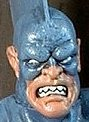
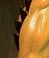

|
Tigershark was made from a Golberg body and a Despero head. The Goldberg head probably would have worked, but the Despero head was perfect, especially with the jagged teeth. Besides, somebody needed to use this figure for something.
The large dorsal fin and smaller lateral fins were made from vinyl (thanks for the idea Iron Cow dudes!) I cut slots in the figure to secure the fins.
The jagged lines were a pain to paint, especially while trying to accomodate drybrushing. The Tigershark costume has always been one of my favorites in the Marvel Universe. I thought this guy was tough until I discovered that his costume colors were apricot and periwinkle!
|